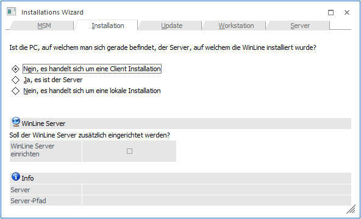
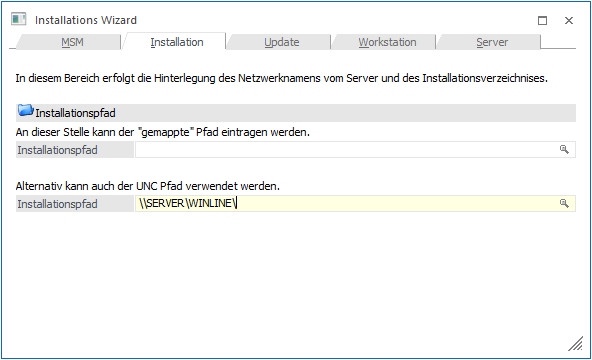
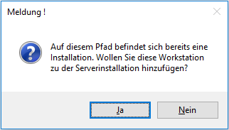
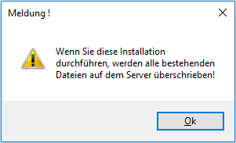
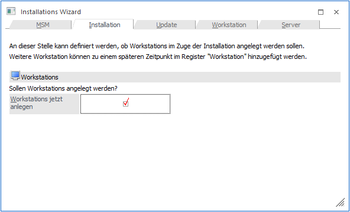
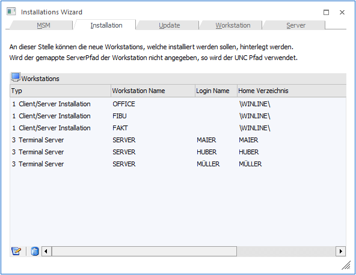
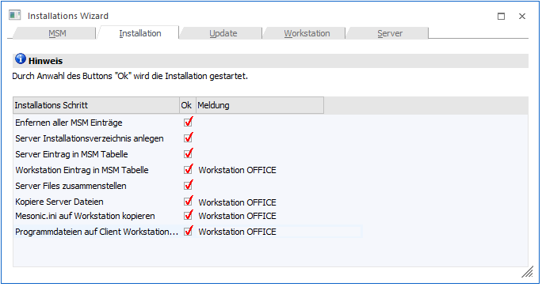

Bei der Installation von der Workstation aus, wurde das Programm auf einer Workstation installiert und wird dann durch den MSM auf den Server und die anderen Workstations verteilt.
Achtung
Bei einer Installation von der Workstation aus sollte darauf geachtet werden, dass das Programm auf die lokale Festplatte installiert wird. Wird die Installation auf ein Server-Verzeichnis durchgeführt, kann das Programm nicht mehr gestartet werden.
Die "Installation von der Workstation aus" erfolgt über den Menüpunkt…
1 MSM
1 Installations Wizard

Bei der Installation von der Workstation aus (z.B. bei Installation eines Novell-Servers) muss hier die Option
Ø Nein, es handelt sich um eine Client Installation
gewählt werden.
 Durch
Anklicken des VOR-Buttons kann die nächste Eingabe bearbeitet werden.
Durch
Anklicken des VOR-Buttons kann die nächste Eingabe bearbeitet werden.
 Durch Drücken des ENDE-Buttons
bzw. der ESC-Taste wird das Fenster geschlossen.
Durch Drücken des ENDE-Buttons
bzw. der ESC-Taste wird das Fenster geschlossen.
Achtung
Wird das Programm beendet ohne dass die Installation vollständig durchgeführt wurde, wird automatisch eine "lokale Installation" beibehalten.
Im nächsten Fenster muss angegeben werden, wie der Server heißt, auf dem die zentralen Dateien verwaltet werden sollen.

Dabei gibt es zwei Möglichkeiten:
ü Es kann der gemappte Pfad
eingegeben werden.
Unter gemappten Pfad versteht man ein Verzeichnis auf
einem PC (Server), das mit einem Laufwerksbuchstaben versehen wurde. Die
Zuordnung von Laufwerksbuchstaben zu Verzeichnissen erfolgt im Windows-Explorer.
Zuerst wird das Verzeichnis ausgewählt (über Netzwerk und PC-Namen). Über den
Menüpunkt Extras/Netzlaufwerk verbinden kann dieses Verzeichnis dann einem
Buchstaben (z.B. M:\) zugeordnet werden. Durch Drücken der F9-Taste kann nach
allen bereits gemappten Laufwerken gesucht werden. Wird ein gemapptes Laufwerk
eingetragen und bestätigt, wird der UNC-Name automatisch ausgefüllt.
Vorteil vom gemappten Pfad
Wenn das Programm auf einen gemappten Pfad zugreifen kann, hat das positive Auswirkungen auf die Geschwindigkeit.
Nachteil vom gemappten Pfad
Auf jeder Workstation muss der Netzwerkpfad mit dem gleichen Laufwerksbuchstaben vergeben werden. Das Mapping muss vor der Installation auf den einzelnen Workstations durchgeführt werden.
ü Der Pfad zum Server kann in UNC-Format (Universal Naming Convention) eingegeben werden, wobei hier zwei Felder auszufüllen sind:
Ø Installationspfad:
Hier muss der Freigabename eingetragen werden. Soll nicht in die Freigabe, sondern in ein Unterverzeichnis davon installiert werden, muss der gewünschte Pfad angehängt und mit einem Backslash abgeschlossen werden.
Durch Drücken der F9-Taste kann nach allen verfügbaren PC´s und ihren Freigaben im Netzwerk gesucht werden.
Vorteil vom UNC-Pfad
Es muss nicht auf jeder Workstation das Serververzeichnis gemappt werden.
Nachteil vom UNC-Pfad
Das Programm wird bei Verwendung von UNC-Pfaden ggf. langsamer.
Wenn sich im ausgewählten Verzeichnis bereits WinLine - Dateien befinden, wird folgende Meldung angezeigt:

Wenn diese Meldung mit JA bestätigt wird, dann wird die Workstation so behandelt, als würde vom Server aus die Workstation hinzugefügt werden. Allerdings werden keine Dateien mehr kopiert, sondern es wird nur die Eintragung in der MSM-Tabelle vorgenommen. In diesem Fall wechselt das Programm gleich in die letzte Maske, wo nur mehr die F5-Taste gedrückt werden muss.
Wird die Meldung mit NEIN bestätigt, dann wird die vorhandene Server-Installation überschrieben. Um diesen Vorgang fortzuführen muss noch folgende Meldung bestätigt werden:

Wurden alle Eingaben durchgeführt,
kann durch Anklicken des VOR-Buttons auf die nächste Seite gewechselt
werden.
 Durch
Anklicken des ZURÜCK-Buttons kann noch einmal die Art der Installation gewählt
werden.
Durch
Anklicken des ZURÜCK-Buttons kann noch einmal die Art der Installation gewählt
werden.

Im nächsten Fenster kann entschieden werden, ob die Workstations, auf denen das Programm installiert werden soll, sofort angelegt werden sollen oder ob dies erst zu einem späteren Zeitpunkt erfolgen soll.
Durch Aktiveren der Checkbox
Ø Workstation jetzt anlegen
können im nächsten Fenster alle Workstations festgelegt werden, auf denen das Programm installiert werden soll.
Es ist zu empfehlen, zumindest eine Workstation anzulegen, auf der das Programm installiert werden soll.
Durch
Anklicken des VOR-Buttons können die einzelnen Workstations angelegt werden.
Durch
Anklicken des ZURÜCK-Buttons kann nochmals der Pfad zum Server eingetragen
werden.

In diesem Fenster können alle Workstations mit ihren Freigaben eingetragen werden, auf denen das Programm installiert werden soll. Pro Workstation kann entschieden werden, um welche Form der Installation es sich handelt.
Eingabefelder
Ø Typ
Aus der Auswahllistbox muss gewählt werden, um welche Installationsform es sich handelt. Dabei stehen 5 Möglichkeiten zur Verfügung:
ü 1 - Client/Server
Das Programm
wird auf die ausgewählte Workstation (Client) kopiert und installiert. Nur die
Daten werden zentral am Server verwaltet.
ü 2 - Zentrale Installation
Bei
der "Zentralen Installation" befinden sich Programme und Daten am Server. Pro
Client (Workstation) gibt es am Server ein eigenes Verzeichnis, in dem die
Konfigurationsdateien gespeichert sind. Auf dem Client müssen nur die
entsprechenden Treiber installiert und die entsprechenden Verknüpfungen zu den
Programmen am Server eingerichtet sein (ODBC), damit das Programm gestartet
werden kann.
ü 3 - Terminal Server
Bei der
"Terminal Server"-Installation gibt es ebenfalls für jeden Client ein eigenes
"Home"-Verzeichnis, in dem die Konfigurationseinstellungen gespeichert sind. Der
Unterschied zur Zentralen Installation besteht darin, dass bei der
Terminal-Server-Installation am Client auch keine Treiber installiert werden
müssen. Der Client arbeitet praktisch direkt am Server - mit allen Programmen,
die auch am Server installiert sind.
ü 4 - Server Farm
Bei dieser Form
der Installation gibt es mehrere Terminal-Server die im Loadbalancing-Verfahren
eingesetzt werden, wobei die Zuordnung der Sessions automatisch erfolgt. In
diesem Fall müssen die benutzerspezifischen Einstellungen bzw. Dateien zentral
am WinLine Server gespeichert werden.
ü 5 - EWL Client
Mit dieser
Option können EWL-Clients installiert werden.
Hinweis zur Terminal-Server (TS) Installation
Grundsätzlich gibt es zwei Arten, eine TS Installation durchzuführen:
ü Terminal-Server = WinLine
Server
In diesem Fall müssen keine Besonderheiten berücksichtigt werden, die
Installation der TS-Benutzer kann normal durchgeführt werden.
ü Terminal-Server <> WinLine
Server
In diesem Fall muss der Terminal-Server zuerst als WinLine-Client
installiert werden (Client/Server-Installation). Erst dann können die
TS-Benutzer angelegt werden, wobei als TS der zuvor installierte Client
angegeben werden muss.
Pro Installation können auch unterschiedliche Typen verwendet werden.
Ø Workstation Name
In diesem Feld muss der Name der Workstation eingegeben werden, auf die das Programm installiert werden soll. Durch Drücken der F9-Taste kann nach allen Workstations, die aktiv im Netzwerk sind, gesucht werden.
Ø Login Name
Dieses Feld kann nur bei der Option "3 - Terminal Server" eingetragen werden. Damit wird bestimmt, für welchen Benutzer die Installation vorgenommen wird.
Ø Home Verzeichnis
In diesem Feld muss das Verzeichnis eingetragen werden, in das das Programm installiert werden soll, bzw. im welchem Verzeichnis die Konfigurationsdateien gespeichert werden sollen (bei zentraler bzw. bei Terminal-Server Installation).
Für die Client/Server-Installation gibt es zwei Möglichkeiten:
ü Wurde auf der Workstation ein Verzeichnis (z.B. WinLine) angelegt und dieses freigegeben, damit dort das Programm installiert werden kann, muss im Feld Installationspfad nur mehr ein Backslash \ eingegeben werden.
ü Wurde auf der Workstation die gesamte Platte freigegeben, muss auch das Verzeichnis angegeben werden, in das das Programm installiert werden soll. Wird in diesem Fall auch nur ein Backslash \ eingegeben, wird das Programm ins Hauptverzeichnis installiert.
Achtung
Bei einer eventuellen Deinstallation des Programms werden auch alle Unterverzeichnisse gelöscht. Wurde das Programm in das Hauptverzeichnis installiert, werden sämtliche Unterverzeichnis ebenfalls gelöscht. Daher sollte es vermieden werden, dass Programm in ein Hauptverzeichnis (Root) zu installieren.
Ø Serverpfad auf Workstation
In diesem Feld muss der Serverpfad entweder in UNC (z.B. \\SERVER\WinLine) oder in gemappter Form (z.B. W:\) eingegeben werden. Dieser Eintrag wird auch in der Datei MESONIC.INI gespeichert, die auf jede Workstation bzw. in jedes Home-Verzeichnis kopiert wird. Wird hier ein falscher Pfad eingetragen, kann das Programm von keiner installierten Workstation aufgerufen werden.
Durch Anklicken des Löschen-Buttons können bereits fertige Einträge wieder gelöscht werden.
Durch Anklicken des Buttons "Workstation-Wizard" können die Workstations auch programmgeführt angelegt werden. Nähere Informationen dazu entnehmen Sie bitte dem Kapitel Workstation Installation.
Im nächsten Fenster wird durch Drücken der F5-Taste die Installation sowohl auf dem Server als auch auf den Workstations gestartet.
Dabei werden folgende Arbeiten durchgeführt:
ü Die MSM-Tabelle wird gelöscht.
ü Das Installationsverzeichnis am Server wird angelegt (sofern es nicht schon vorhanden ist).
ü Der Server wird in die MSM-Tabelle eingetragen.
ü Die angeführten Workstations werden in die MSM-Tabelle eingetragen.
ü Die Dateien für den Server werden vom Installationsverzeichnis auf den Server kopiert.
ü Das Verzeichnis für die Workstation wird angelegt (sofern es nicht schon vorhanden ist).
ü Die Datei MESONIC.INI wird auf die Workstation bzw. in die dafür vorgesehenen Verzeichnisse (bei zentraler bzw. bei Terminal-Server-Installation) kopiert.
Nach erfolgter Installation erhalten Sie eine Übersicht über alle Schritte, die das Programm durchgeführt hat:

Dazu wird noch folgende Meldung angezeigt:

Damit ist die Installation abgeschlossen. Durch Drücken der ESC-Taste wird das Programm WinLine ADMIN geschlossen.
Als nächster Schritt muss auf jeder Workstation (ausgenommen bei Terminal-Server-Installationen) aus dem Verzeichnis \ClientSetup vom Server die Datei SETUP.EXE aufgerufen werden.
Dadurch werden die erforderlichen ODBC-Treiber, die für die Ausführung des Programms notwendig sind, sowie die Links zu den Programmdateien installiert.
Bei einer Terminal-Server-Installation muss dieser Schritt nicht durchgeführt werden.
Achtung
Bevor das Programm auf den einzelnen Workstations installiert wird, muss überprüft werden, ob der Internet-Explorer 6.0 oder höher installiert ist. Ist dies nicht der Fall, muss die Installation nachgeholt werden. Ansonsten kann das Hilfesystem und/oder die Formel nicht ordnungsgemäß arbeiten.
Damit ist der dritte Schritt der Installation abgeschlossen.
Die nächsten Schritte für die Installation sind für alle Installationsarten gleich und werden extra beschrieben.